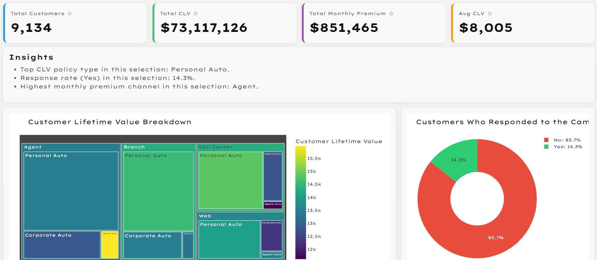

Customer Analytics Dashboard An interactive dashboard over 9,134 insurance customer records
The demo runs on free hosting that sleeps when idle. The first load can take up to a minute to wake.

Open the live dashboard ↗01Overview
Status: COMPLETE / DEPLOYED
PROJECT: An interactive dashboard for segmenting an insurance customer base and reading campaign results against each segment. It is a self-service tool, so a marketing team can answer its own questions about a segment without requesting a new report each time.
HOW IT WORKS: Three dropdowns filter 9,134 customer records. Four headline figures, four charts and a short insights block recalculate on every change, and the filtered rows download as a CSV file.
TECHNOLOGY: Python, with Dash for the application, Plotly for the charts and pandas for the data handling. Deployed on Render and opened in a browser, with no installation and no login.
DATA: A public IBM sample dataset of auto insurance customers, published for its Watson Analytics product and widely reused as a standard example set. It holds 9,134 records covering customer attributes, policy details, monthly premium, estimated lifetime value and campaign response. It is sample data, not a client's records.
Baseline figures
Records with no filters applied
Sum of estimated lifetime value
Combined monthly revenue
Mean value per customer
Every figure recalculates against the current selection.
02What It Does
Status: COMPLETE
FILTERS: Sales channel, policy type and coverage level, in any combination.
FIGURES: Customer count, total CLV, total monthly premium and average CLV for the current selection. Each card carries its definition on hover.
INSIGHTS: Three generated lines covering the leading policy type by CLV, the response rate, and the channel with the highest monthly premium.
EXPORT: Downloads the rows behind the current view as a CSV file.
DEFINITIONS: A block above the filters states what the dataset holds and what counts as a positive campaign response.
Charts
Treemap
Total CLV, nested by sales channel then policy type, shaded by average CLV per customer.
Donut
The current selection split by whether customers responded to the campaign.
Box plot
The distribution of customer lifetime value across the three policy types.
Scatter
CLV against monthly premium, coloured by policy type and sized by income.
03How It Was Built
Status: AI-ASSISTED / VALIDATED
APPROACH: The application code was written with AI assistance, developed over several days rather than generated in a single pass.
MODELS: The first version was developed in ChatGPT 5.2 and continued in Claude Sonnet 4.5, accessed through a Perplexity subscription. The code was later reviewed in Claude Opus 5.
VALIDATION: Figures were checked against the source data more than once, and charts were revised where what they displayed did not hold up.
STRUCTURE: A single callback takes the three dropdowns and returns every figure on the page. A second callback handles the CSV download.
Iterative development
I ask for one small piece of the application at a time, run it locally, and report back what worked and what did not. The next version is shaped by that feedback. When a model stops making progress I switch to another one.